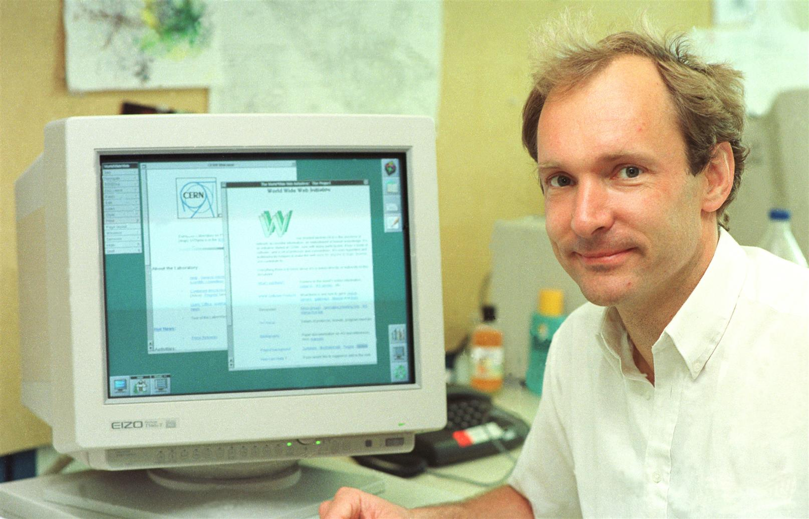
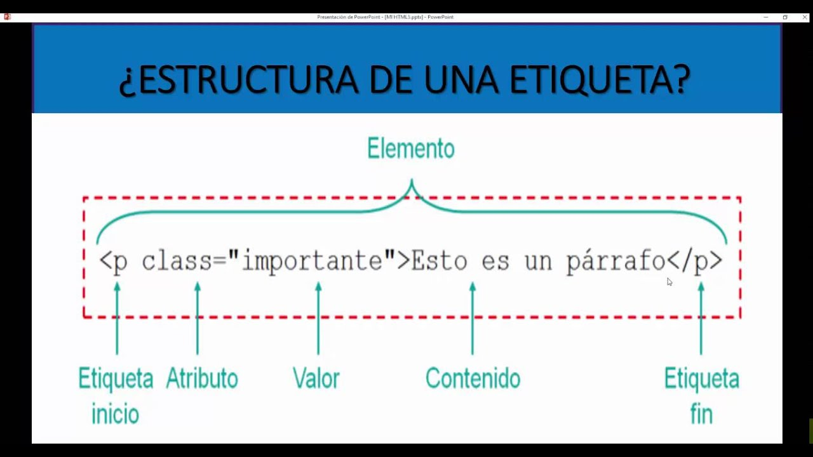
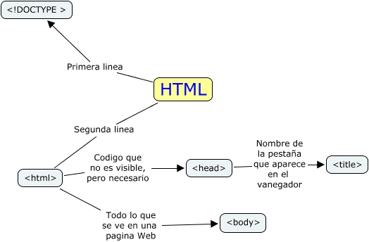
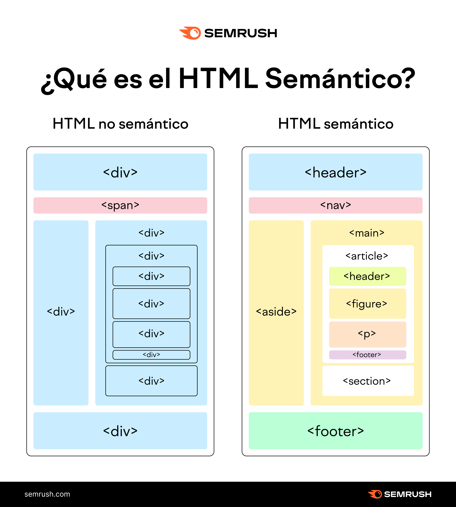

INTRODUCCION A HTML
REGRESAR
BREVE HISTORIA DE HTML
En 1989, el físico británico Tim Berners-Lee propuso un sistema de gestión de información para facilitar el intercambio de datos entre científicos del CERN, sentando las bases de la World Wide Web. Dos años más tarde, en 1991, publicó el primer documento formal denominado HTML Tags, un lenguaje de marcado simplificado basado en el estándar SGML. Aquella versión inicial constaba de apenas 18 etiquetas básicas -como title, a y p— diseñadas para estructurar textos e hipervínculos navegables. A mediados de la década de 1990, la expansión de la red motivó la creación de navegadores como Netscape Navigator y la necesidad de unificar criterios. La IETF lanzó HTML 2.0 en 1995 como el primer estándar oficial, e inmediatamente después se fundó el World Wide Web Consortium (W3C), dirigido por Berners-Lee, para asumir el control del lenguaje. Durante este periodo de la "guerra de navegadores" nacieron HTML 3.2 y HTML 4.01 (1999), incorporando elementos fundamentales como tablas, formularios, soporte para hojas de estilo (CSS) y scripts. Con la llegada del nuevo milenio, el W3C intentó reorientar el desarrollo web hacia el lenguaje XML, creando XHTML 1.0 en el año 2000. Esta variante exigía una sintaxis extremadamente estricta que rompía la compatibilidad si existía el mínimo error en el código, lo que provocó frustración entre los desarrolladores. Ante esta rigidez, miembros de Apple, Mozilla y Opera fundaron en 2004 el WHATWG (Web Hypertext Application Technology Working Group) con la meta de evolucionar HTML de forma pragmática. El esfuerzo del WHATWG dio vida a HTML5, presentado formalmente en 2008 y consolidado como recomendación del W3C en 2014. HTML5 transformó la red al añadir etiquetas semánticas (header, article, nav), integración nativa de audio y video sin necesidad de complementos externos como Adobe Flash, y herramientas para gráficos vectoriales y almacenamiento local. Esta versión fue determinante para la transición masiva de la web hacia los dispositivos móviles. En 2019, el W3C y el WHATWG firmaron un acuerdo para unificar el desarrollo bajo el concepto de Living Standard (Estándar Vivo). Con este modelo se abandonó la numeración de versiones tradicionales a favor de una especificación en evolución continua que se actualiza en tiempo real. Hoy en día, HTML es la columna vertebral dinámica que impulsa desde páginas informativas hasta complejas aplicaciones web en cualquier pantalla del mundo.

ESTRUCTURA DE UNA ETIQUETA HTML


Estructura basica de una Pagina Web HTML


Estructura sematica de una Pagina Web
